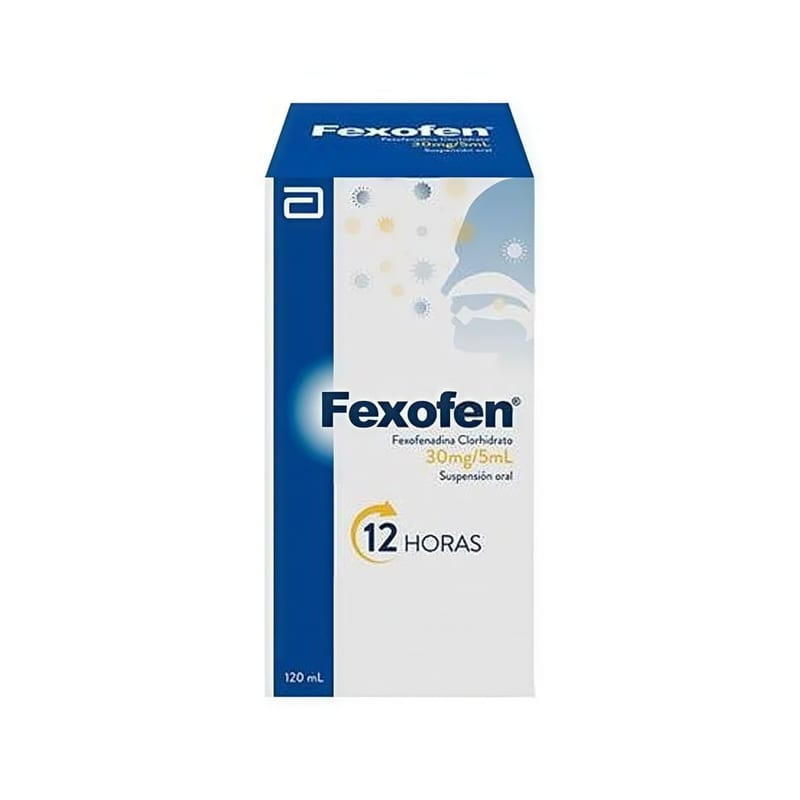

Fexofen Pediatrik 30 mg/5 ml Şurup, 100 ml

Ne için kullanılır
KT · Bölüm 1FEXOFEN PEDİATRİK'in etkin maddesi feksofenadin hidroklorür'dür. Kırmızı renkli, çilek kokulu ve özel tatlı şurubun Sml'si 30 mg feksofenadin hidroklorür içerir. FEXOFEN PEDİATRİK Şurup, 100 ml ve 200 ml şurup içeren plastik kapaklı amber renkli cam şişe içerisinde ve karton kutu ambalajlarda kullanıma sunulmuştur. FEXOFEN PEDİATRİK, antihistaminik ilaçlar grubundandır. Antihistaminik ilaçlar, saman nezlesi (mevsimsel alerjik rinit) denen hastalıkla ortaya çıkan aksırık, kaşıntılı burun akıntısı, gözlerde kızarma ve sulanma gibi belirtileri iyileştirirler.
* Doktorunuz, FEXOFEN PEDİATRİK'i 2 - 11 yaş arasındaki çocuğunuza mevsimsel alerjik rinit ve 6 ay - İ1 yaş arasındaki çocuğunuza kronik idiopatik ürtiker (uzun süreli alerjik deri reaksiyonları) adı verilen hastalıklara bağlı olarak gelişen aşağıdaki belirtilerin giderilmesi için reçetelemiş olabilir: - Burun akıntısı - Burun, damak ve boğazda kaşıntı - Gözlerde kızarma ve sulanma - Deride kaşıntı, kabartı ve döküntü